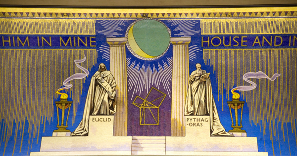

Oxford Freemasonry
Blockley Lodge No. 6345 in the register of the United Grand Lodge of England is a Oxford Freemasons’ lodge in the Masonic Province of Oxfordshire.
Our lodge is made up of members from all walks of life and backgrounds. We meet five times a year, on a Saturday, which we have found works well for students and younger professionals. We draw our membership from the City of Oxford, as well as across Oxfordshire.
As a UGLE Universities Sceheme Lodge, we are ideally suited for students at Oxford Brookes and other tertiary education establishments. We welcome enquiries from anyone interested in Freemasonry.
What is Freemasonry
Freemasonry is one of the world’s oldest and largest non-religious, non-political, fraternal and charitable organisations. It teaches self-knowledge through participation in a progression of beautiful and occasionally dramatic ceremonies. Brethren learn these by heart to perform within the Lodge. The ritual follows ancient forms and uses the customs and tools of mediaeval stonemasons’ as allegorical guides.
For Freemasons, there are four important values that help define their path through life: Integrity, Friendship, Respect and Service. In today’s world filled with uncertainty, these principles ring as true as they have at any point in the organisation’s history.
Our Lodge History
Blockley Lodge's own history began when it was granted a Warrant from the United Grand Lodge of England on 7 August 1946. However, it traces its masonic lineage in Oxford all the way back to Alfred Lodge No. 340 which was founded in 1814. The first meeting of Blockley Lodge was on the date of its consecration on 24 September 1946. February 2020 saw the 520th meeting of Blockley Lodge since its consecration
Blockley Lodge is named in honour of the Revd T.T. (Thomas Trotter) Blockley (22 May 1864 - 2 March 1950). The Reverend Blockley was initiated into the Apollo University Lodge while studying at Oxford. His subsequent clerical career saw him appointed as Dean of Divinity (chaplain) of Magdalen College where he served for fourteen years (1897-1911). He was made Grand Chaplain of the United Grand Lodge of England in 1918 and eventually became Provincial Grand Master for Oxfordshire in 1945. Our Lodge's historic connection to Magdalen College means that the symbol on the Lodge's badge of Magdalen College Tower (pictured above), which was completed in 1509 and is an Oxford landmark.